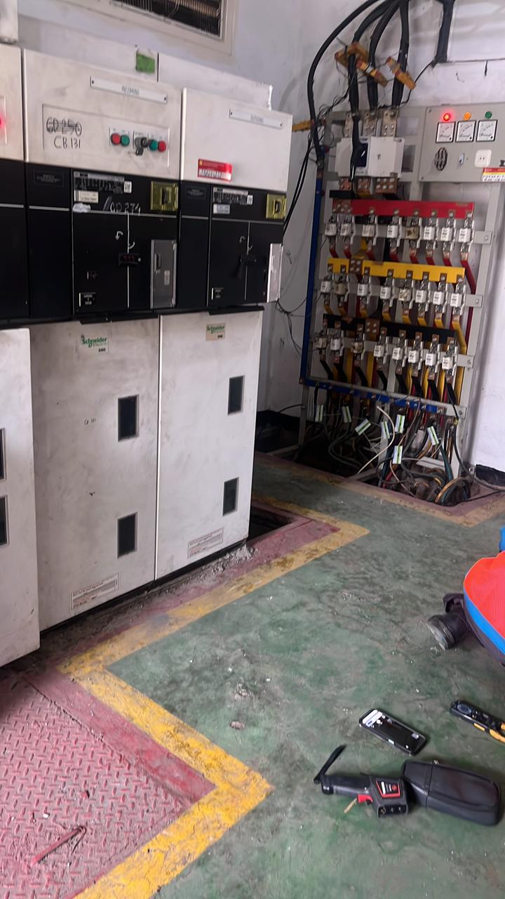
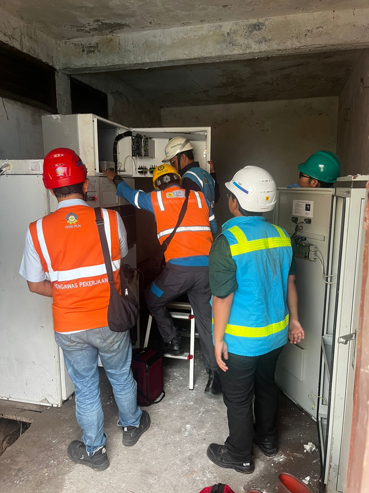
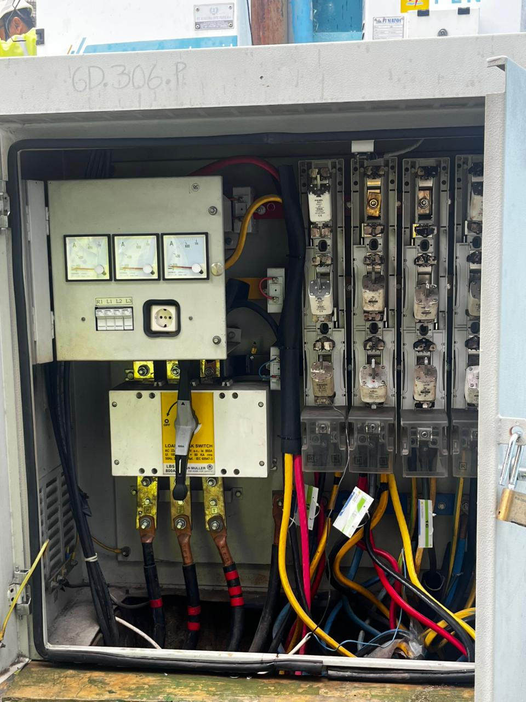
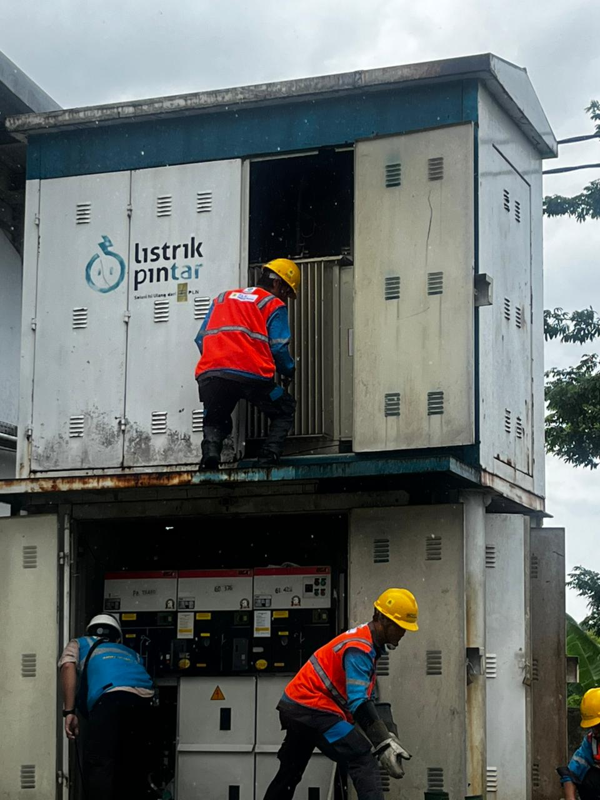

Internship Certificate

Internship Documentation





Sertifikat magang dari PT PLN Persero sebagai Electrical Technician Intern.
Selama kegiatan magang, mempelajari dasar instalasi listrik, troubleshooting, maintenance perangkat, dan pengenalan sistem kelistrikan di lingkungan kerja.
Pengalaman ini membantu meningkatkan kemampuan teknis, problem solving, teamwork, dan adaptasi di dunia industri.